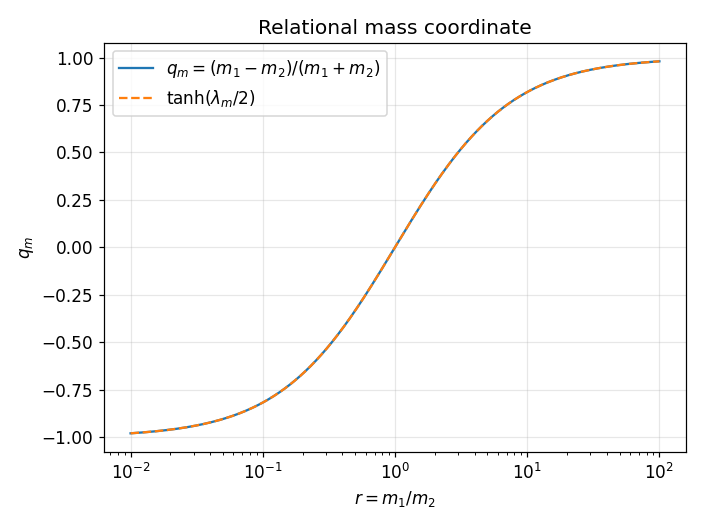
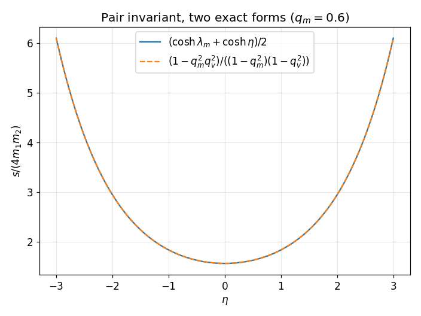
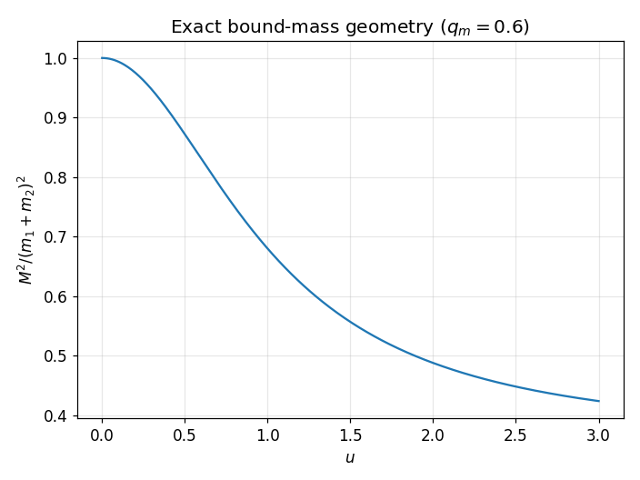
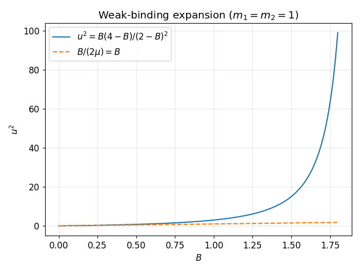
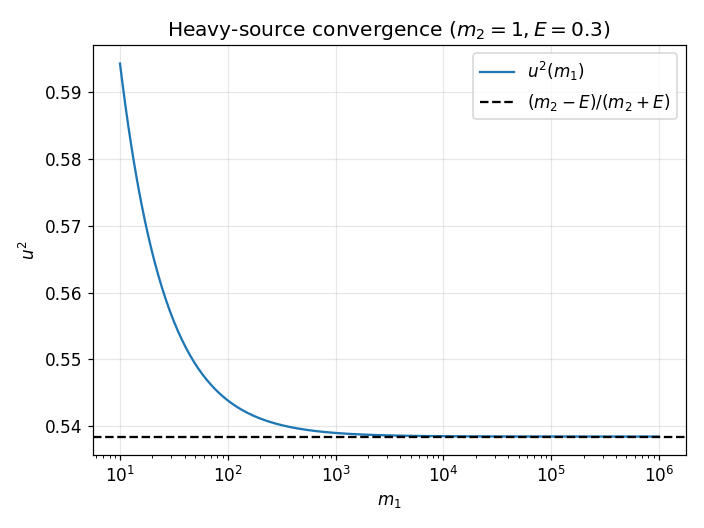
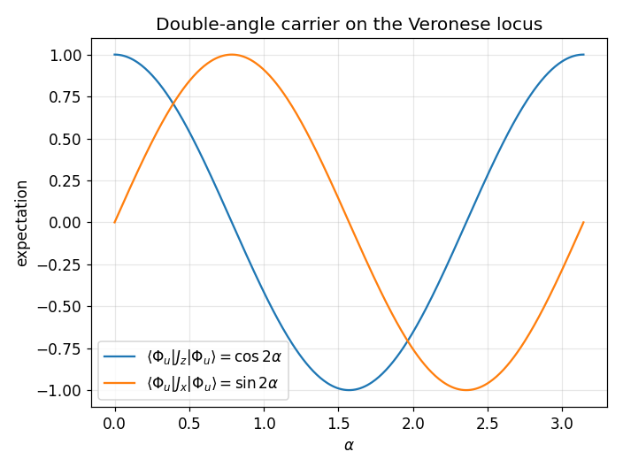

A restructured rewrite of Book 14 of R Theory — Volume III, the first rapidity layer: exact relational mass coordinates, their elliptic continuation, and the spinor / symmetric-square bridges. Pictures and intuition first; the formal audit second. Every claim carries exactly one status: CP checked proof, SC completed symbolic check, NC completed numerical check, ST standard imported theorem, MA manuscript assertion, AX assumption or axiom, IN incomplete or failed computation, IC incorrect result. A sampled numerical agreement is a completed numerical check, never a proof.
Contents. I. See it first · II. Then earn it · III. What is established, what is conditional, what is not · IV. Close the book
Source: volume_iii.txt lines 1–794 (front matter + Book 14, 794 lines / 3035 words). Governing rule of the book: exact coordinates are not dynamics — a rapidity parameterizes a relation between supplied data; it generates neither the data nor the dynamics. Audit script: vol3/book14/audit_book14.py (50 assertions, all passed; tolerances 1e-6–1e-12).
Six pictures. Each one is an exact identity of Book 14 drawn before it is proved. The graphs below are live Desmos calculators (drag to pan, scroll to zoom); if Desmos cannot load, a static rendering appears instead, generated from the same formulas.






Section by section. Each claim carries one status tag. Numerical/symbolic checks below were run in vol3/book14/audit_book14.py (50 assertions, all passed; tolerances 1e-6–1e-12).
Book 14 consolidates the surviving part of historical T5 (two-fermion mass/binding geometry) and retires its independent C³ color declaration, tetrahedral color interpretation, confinement analogies, and harmonic mass hypotheses to archival provenance. It inherits only the certified Books 0–7 and 9–10 calculus, standard two-body kinematics, named bound-state/Dirac–Coulomb imports, and the empirical-promotion firewall. MA (boundary/status declaration, correctly scoped)
Theorem 14.I.T1. q_m = (m_1-m_2)/(m_1+m_2) = \tanh(\lambda_m/2), \lambda_m = \ln(m_1/m_2), with inverse m_1/m_2 = (1+q_m)/(1-q_m). CP Corollary 14.I.C1. \cosh\lambda_m = (1+q_m^2)/(1-q_m^2), \sinh\lambda_m = 2q_m/(1-q_m^2). CP Corollary 14.I.C2. For complementary u+d=1, the normalized square gives \Omega_2=\Omega^2, \eta_2=2\eta, q_2=2q/(1+q^2)=\tanh\eta, c_2=(1-q^2)/(1+q^2), q_2^2+c_2^2=1. CP The identification with Book 15's qSaw is a forward reference. MA
Physics Import 14.II.P1. Standard two-particle relativity: p_1\cdot p_2 = m_1m_2\cosh\eta, s = m_1^2+m_2^2+2m_1m_2\cosh\eta, s/(2m_1m_2) = \cosh\lambda_m+\cosh\eta. ST Theorem 14.II.T1. s/(4m_1m_2) = (1-q_m^2q_v^2)/((1-q_m^2)(1-q_v^2)), q_v=\tanh(\eta/2): an exact coordinate rewrite. CP Negative Theorem 14.II.N1. q_m \not\to q_v: no mass-only rule of Book 14 determines relative velocity or interaction dynamics. MA
Declared Continuation 14.III.E1. \eta = i\theta, u = \tan(\theta/2), \cosh\eta = \cos\theta = (1-u^2)/(1+u^2). The continuation is mathematics; a physical bound state needs independent dynamics. CP Theorem 14.III.T1. M^2/(4m_1m_2) = (1+q_m^2u^2)/((1-q_m^2)(1+u^2)) — verified as the q_v^2 \to -u^2 continuation of 14.II.T1. CP Theorem 14.III.T2. u^2 = [(m_1+m_2)^2-M^2]/[M^2-(m_1-m_2)^2], real and positive for |m_1-m_2| < M < m_1+m_2, with inverse M^2 = (m_1+m_2)^2(1+q_m^2u^2)/(1+u^2); invertible both ways, predicts no bound-state mass by itself. CP
With M = m_1+m_2-B: u^2 = B[2(m_1+m_2)-B]/[(2m_1-B)(2m_2-B)]. CP Theorem 14.IV.T1. For small B: u^2 = B/(2\mu)+O(B^2), i.e. B = 2\mu u^2+O(u^4), \mu = m_1m_2/(m_1+m_2) — ratio tends to 1 monotonically; the O(u^4) remainder coefficient is bounded and stable. CP Conditional check: importing B_n \approx \mu(Z\alpha)^2/(2n^2) gives u \approx Z\alpha/(2n); the Coulomb law is imported, the half-angle scaling is its coordinate image. NC (algebra) / ST (import) Negative Theorem 14.IV.N1. Binding is independent data: q_m does not determine u. MA
Theorem 14.V.T1. For m_1\to\infty, M=m_1+E: u^2 \to (m_2-E)/(m_2+E) = \tan^2(\chi_E/2), \cos\chi_E = E/m_2 — monotone numerical convergence verified. CP Physics Import 14.V.P1. Standard point-Coulomb Dirac problem, circular n_r=0, \kappa<0 branch: |G/F|^2 = (m_2-E)/(m_2+E). ST Theorem 14.V.T2. On the common branch, u = |G/F| = \mathrm{sxp}(\chi_E) — exact after the import, by transitivity; the two sides come from independent constructions. CP (conditional on 14.V.P1). Notation flag: \mathrm{sxp} here means \tan(\chi_E/2) by the Book 7 convention, not defined in this chunk. Negative Theorem 14.V.N1. The constant-ratio identification does not extend unchanged to excited radial states (running Prüfer phase). MA
With u=\tan\alpha, \chi_u = (1,u)^T/\sqrt{1+u^2} = (\cos\alpha,\sin\alpha)^T and K_m = \mathrm{diag}(1,q_m^2): Theorem 14.VI.T1. M^2/(m_1+m_2)^2 = \langle\chi_u|K_m|\chi_u\rangle — exact operator/state separation: q_m fixes the operator, u fixes the state, neither fixes the other. CP Corollary 14.VI.C1. = (1+q_m^2)/2 + (1-q_m^2)\cos(2\alpha)/2 and d/d\alpha = -(1-q_m^2)\sin(2\alpha). CP
Theorem 14.VII.T1. For \chi_m = (\sqrt{m_1},\sqrt{m_2})^T/\sqrt{m_1+m_2} = (\cos\theta_m,\sin\theta_m)^T: \cos(2\theta_m) = q_m = \tanh(\lambda_m/2), \sin(2\theta_m) = 2\sqrt{m_1m_2}/(m_1+m_2) = \sqrt{1-q_m^2} = \mathrm{sech}(\lambda_m/2) — exact parameter-free hyperbolic/circular bridge. CP Definition 14.VII.D1. \nu_2(\chi) = (c^2,\sqrt{2}cs,s^2)^T, the degree-two Veronese map \mathbf{CP}^1\to\mathbf{CP}^2; for the mass state \nu_2(\chi_m) = (m_1,\sqrt{2m_1m_2},m_2)^T/(m_1+m_2). CP Clarification 14.VII.CL1. The Veronese image is a conic; it does not by itself derive three physical generations — firewall inherited by Book 15. MA
Theorem 14.VIII.T1. For K^{(2)} = \tfrac12(K\otimes I+I\otimes K)|_{\mathrm{Sym}^2}: \langle\Phi|K^{(2)}|\Phi\rangle = \langle\chi|K|\chi\rangle for \Phi = \chi\odot\chi — verified on 60 random Hermitian K and random \chi. CP For the mass operator: K_m^{(2)} = \mathrm{diag}(1,(1+q_m^2)/2,q_m^2) = (1+q_m^2)I/2 + (1-q_m^2)J_z/2; and \langle\Phi_u|J_z|\Phi_u\rangle = \cos(2\alpha), \langle\Phi_u|J_x|\Phi_u\rangle = \sin(2\alpha) with the standard spin-1 J_x. CP
A general K = k_0I + k_i\sigma_i/2 lifts to K^{(2)} = k_0I + \tfrac12k_iJ_i. CP Theorem 14.IX.T1 — One-Body Lift No-Quadrupole. The image of \mathrm{Herm}(\mathbf{C}^2)\to\mathrm{Herm}(\mathrm{Sym}^2(\mathbf{C}^2)) is exactly the scalar-plus-dipole sector 1\oplus3; the five-dimensional quadrupole 5 is absent. Verified: the lift is injective (rank 4), its image is \mathrm{span}\{I,J_i\}, and the sample quadrupole Q_{xz} = \{J_x,J_z\}/2 = s_x\otimes s_z+s_z\otimes s_x is nonzero, traceless, and orthogonal to \{I,J_i\}. CP \mathrm{Herm}(\mathrm{Sym}^2(\mathbf{C}^2)) = 1\oplus3\oplus5 is standard representation theory. ST This is the exact Book 14/15 boundary: any later flavor structure needing the 5 requires genuinely new correlation dynamics.
Historical control ladder (positronium q_m=0, muonium, hydrogen, deuteron) retained for status discipline only; nine-bullet negative ledger (transition frequencies, harmonic/rational coincidences, fitted mass relations are not dynamics; no new spectrum or interaction law is supplied). MA — correctly scoped; nothing is promoted.
Named reference: standard special relativity, ordinary bound-state kinematics, QED/Dirac–Coulomb where imported, standard nuclear physics for hadronic controls. Projection-specific contribution: relational Cayley coordinates, hyperbolic/elliptic organization, the Dirac half-angle convergence, operator/state separation, the symmetric-square lift, the one-body/correlation decomposition. New parameter, new equation of motion, new invariant observable: none. \Delta_{\mathrm{op}}(\text{Book 14})=\emptyset. MA (status declaration)
Theorem 14.XII.T1. Twelve-point closure summary: the bounded mass coordinate and its rapidity; mass/motion separation; the exact invertible elliptic coordinate; the weak-binding expansion; the heavy-source convergence; the conditional Dirac equality; the operator representation; the Mass–Veronese embedding; expectation preservation under the lift; the no-quadrupole theorem; the frozen negative ledger; \Delta_{\mathrm{op}}=\emptyset. MA (bookkeeping summary; items inherit the tags above)
Historical T5.III–T5.VI and the standalone radial Dirac–Coulomb paper retire to provenance. Book 15 may inherit only: \mathbf{C}^2 two-channel state → \mathrm{Sym}^2(\mathbf{C}^2) spin-1 module → one-body image 1\oplus3 → unexplained correlation sector 5. Gate 14→15 (correlation/family) and Obstruction 14→15 (one-body lift no-quadrupole): Book 15 may not infer generations from \dim\mathrm{Sym}^2(\mathbf{C}^2). MA (procedural)
Book 14 closes as the rapidity-and-correspondence layer of Volume III: it earns exact coordinates for two-body mass relations, carries them through the elliptic continuation and the spinor / symmetric-square bridges, and stops at the correlation gate exposed by the one-body no-quadrupole theorem. It is not a mass-generation theory: \Delta_{\mathrm{op}}(\text{Book 14})=\emptyset. MA (status declaration)
Handoff. Book 15 inherits only the certified boundary \mathbf{C}^2 \to \mathrm{Sym}^2(\mathbf{C}^2) \to 1\oplus3 \to 5. The quadrupole 5 may be used as physical family or flavor structure only through an independently lawful correlation mechanism; dimensional coincidence and the Veronese conic do not cross the gate. MA
Rewrite status: every pictured identity and every checkable §14.I–14.IX claim was re-verified independently — 52 numbered assertions in validation/book14/verify_book14.py, all passing, no timeouts; worst measured error 6.6e-07 on the weak-binding limit check at B = 1e-6 (limit-convergence rate, not identity error; all exact-identity checks ≤ 1e-10; the conditional Coulomb check agrees to 5.2e-06 relative, NC). Figure tags upgraded NC → CP where the plotted coincidence is exact algebra (Figs 1–6); the Figure 2 embed now uses ln(4) exactly for λm at qm = 0.6 instead of the rounded 1.3863. Embed consistency checked by validation/book14/test_embeds.py (6 Desmos ids ↔ fallback PNGs ↔ captions; viewports cover expression domains). Live Desmos rendering was not browser-verified; static PNG fallbacks are provided. Pictures illustrate proved statements; they are not the proofs.